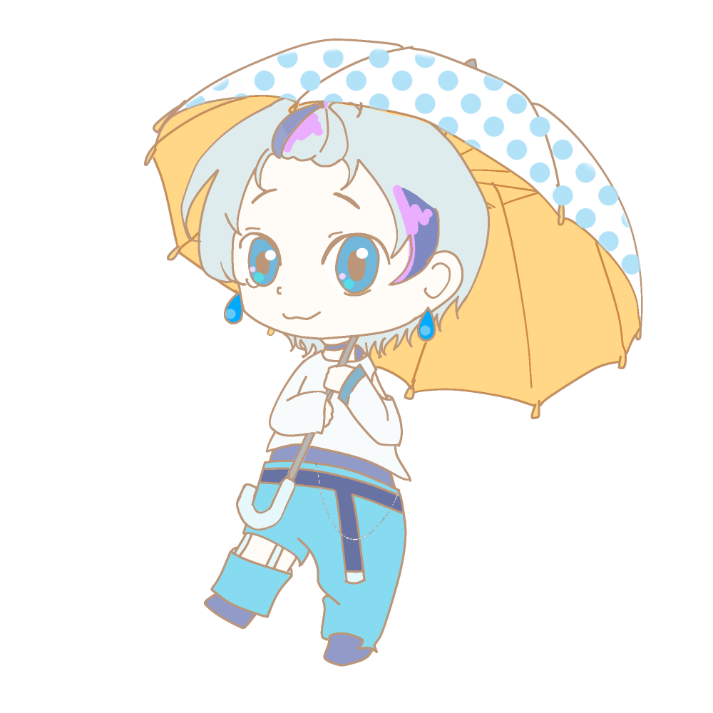
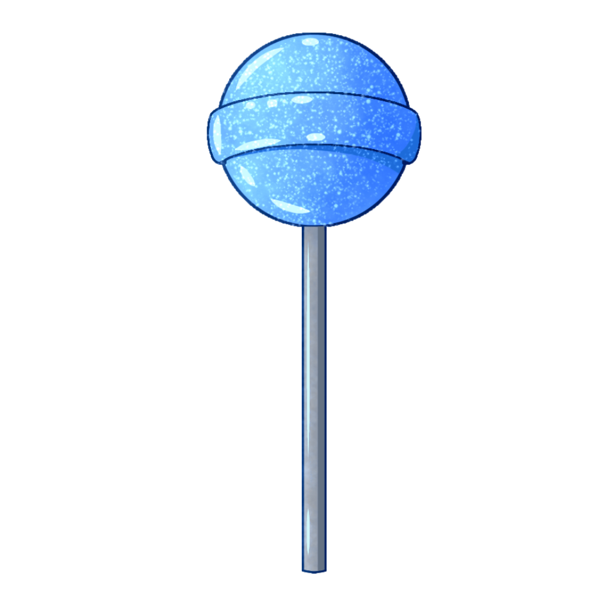
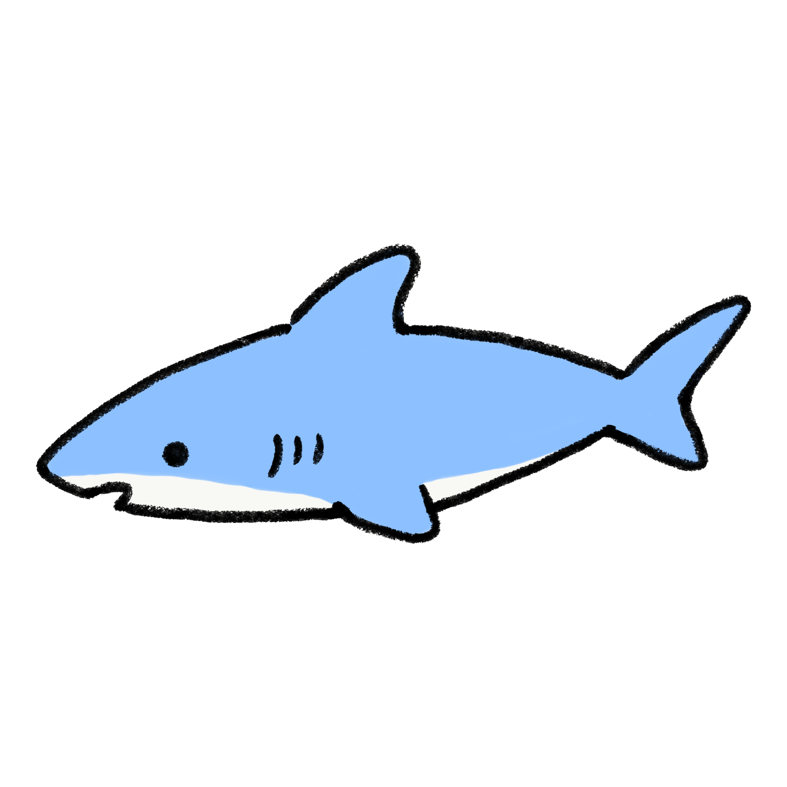
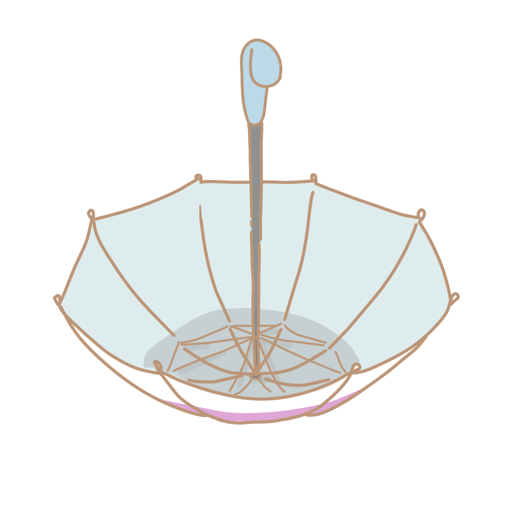

かさでキャッチゲーム

矢印キーを使って傘を動かしアイテムをキャッチしよう！
1ゲーム 30秒
-
得点

：1～4 point
：7～10 point
：-3～-7 point
※2026年10月現在の時点でYouTube登録者数130万人overの某2.5次元タレントグループ様のファンアート第一弾として梅雨の妖精さんのゲームを作ってみました。
ぜひ遊んでみてください。
※使用画像：いらすとや様、ぴよたそ様、アイビスペイント様（トレス素材/柄素材/キャンディー素材）
※使用音源：BGM・ジングル・効果音 フリー素材サイト OtoLogic様、効果音ラボ様
制作者：ねるこあいす / 投稿日：2026/10/01 version0.1
かさでキャッチゲーム
スコア：0
残り時間：30秒
1～4 point
7～10 point
-3～-7 point

キーボードの ← → キー、または ← → ボタンで傘を動かして、サメと飴をキャッチ！
※スマホ・タブレットでは傘をスライドさせることもできます。